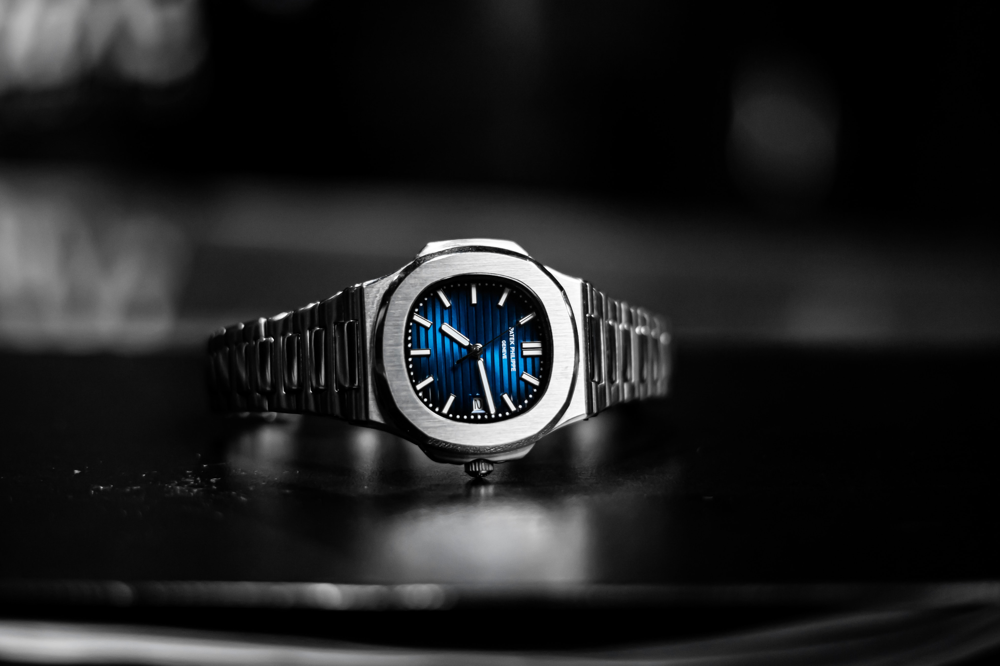

Eventos Exclusivos
En la alta sociedad, los eventos son glamorosos y exclusivos. Desde fiestas privadas hasta galas benéficas.
La alta sociedad despliega su esplendor a través de eventos sin igual, donde la elegancia y la exclusividad se entrelazan en un tapiz de distinción. Desde las majestuosas galas benéficas hasta las íntimas veladas en lujosos palacetes, cada evento es un testimonio del refinamiento y la opulencia que define este estrato social. Entre los imponentes salones adornados con obras maestras y los jardines iluminados por la luz de las estrellas, se llevan a cabo encuentros donde la sofisticación es la protagonista. Los invitados, cuidadosamente seleccionados, comparten conversaciones entre susurros sobre arte, cultura y filantropía, mientras brindan con exquisitos elixires y degustan delicias gastronómicas preparadas por renombrados chefs. Los eventos exclusivos no solo son ocasiones para deslumbrar con glamur y estilo, sino también para forjar alianzas, apoyar causas nobles y compartir experiencias que perdurarán en la memoria de aquellos privilegiados que tienen acceso a este mundo de distinción.

Reloj y Estilo
La moda es un pilar en este mundo. Hablaremos de diseñadores, tendencias y elegancia sin igual.
En los círculos selectos, los relojes son mucho más que instrumentos de tiempo; representan la fusión perfecta entre arte, lujo y funcionalidad. Estas piezas horológicas, desde las emblemáticas hasta las complicadas, son símbolos de estatus y refinamiento. La moda, motor de expresión, se convierte en el crisol donde la elegancia atemporal se encuentra con la vanguardia. Desde trajes clásicos hasta las últimas creaciones de diseñadores reconocidos, cada prenda es una declaración de sofisticación. Los relojes, joyas funcionales, complementan con gracia los atuendos impecables de la élite. Desde su precisión técnica hasta su estética exquisita, son el epítome de la maestría y el gusto, fusionando la artesanía con el estilo. Estos objetos de deseo no son solo accesorios; son testimonios de un estilo de vida superior, donde la moda y la precisión se entrelazan para crear un aura de refinamiento y distinción.
Galería